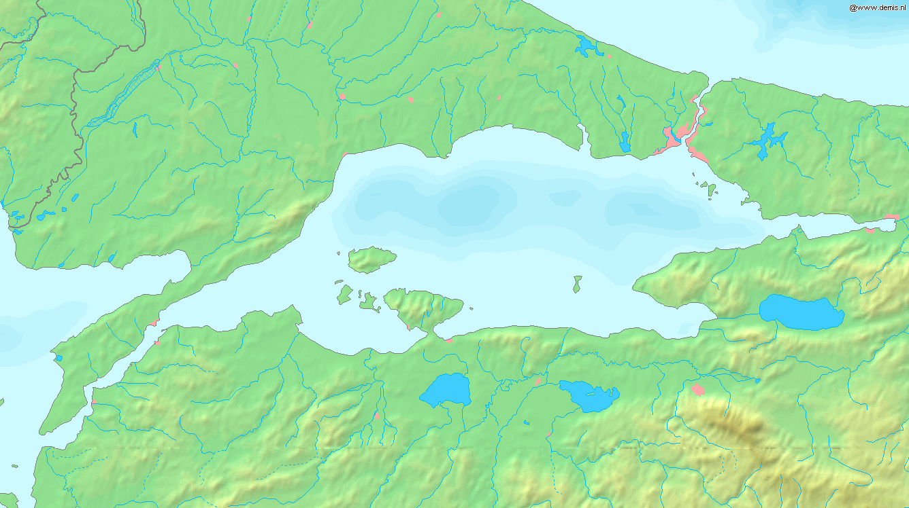

今天还是先从意识形态开始。前面提到了，设定「希帕索斯会」的口号是『万数皆物』，以和毕达哥拉斯学派的「万物皆数」针锋相对。这种设定，也是符合「卡壳世界」那赛博朋克式「晚绑定懒求值」的主观唯心主义世界观。就是说，凡是数学上已经获得的结论，都会对应到现实当中，都具有实际意义，而随着人类认知范围的扩展，世界也会随之改变。
于是就回避了「形式主义」阵营希尔伯特的美好愿望「我们必须知道，我们必将知道」被哥德尔冷酷证明打脸这个事实，被诡辩唯物主义者拿来攻击「数学工作」之形而上学意义的可能性。既然可供证明的命题是无穷多个，那些证明不了的命题，无论是来不及证明还是理论上就不可证明，都没有区别，都不会体现在现实世界当中去。哪怕从「直觉主义」出发也知道，世界并不是「随心所欲」变化的，也不会变成「匪夷所思」的模样。
注意「回避」并不意味着退缩，前面也提到了，数学工作者不会因为「政治挂帅」就轻率的「舍去」任何一种可能性，只是划分为「暂时来不及研究」的较低优先级罢了。我在其它回复中引入了「自由意志公设」并随后「自洽」，也是出于这个目的。说过了要分清主要矛盾和次要矛盾，「豺狼当道安问狐狸」，不能把宝贵的时间浪费在与「致公党员」纠缠之上。那些手捻佛珠身纹神话生物以「你瞅啥」「瞅你咋地」互相问候的傻哔，是最底层最垃圾的炮灰，比搭理这帮奴才更重要的事情有得是。
哎呀感觉舒服多了，意识形态是个永不过时的话题嘛。为了粉碎诡辩唯物主义者的猖狂进攻，还就需要年年讲、月月讲、天天讲，讲到天荒地老，常讲常新嘛。
开场白结束，言归正传。
下一个场景，解释了猴拳、通背拳法、居合斩这三种「武术」之间的关系，论述了课程安排的「合理性」。在极简主义风格原则的指导之下，随着情节逐步展开设定虽然吃力不讨好，但是就不必在正文当中插入大段旁白对读者进行「说教」以凑足字数糊弄读者，或者把「说教」内容抽出来继续注水成单行本发售，以保证正文「一字百元年入四千万」的营业利润指标，当然后果就是免不了会遭遇到来自包括但不限于网文巨侠钦定文豪的「劣币驱逐良币」的指责。
第一句，「校医务室设备齐全」这八个字，体现了正反两方面的丰富内涵，提醒读者要重点注意，不可以等闲视之。
正面内涵，就是党国高音喇叭宣传过不止一次的「平时多流汗，战时少流血」。至少不能接触国家机密的人民群众，从官方媒体当中可以获得，我中华兲朝上国武装力量并没有为了啥「全年训练无伤亡」的锦旗表彰以及随之而来的晋衔升官的远大理想而弄虚作假的印象。
而即便接触不到国家机密，人民群众还可以在「和平时期的战争」也就是「体育」相关新闻当中获得类似印象。比方说啥「训练强度比比赛强度还要高」「训练中因为对抗激烈而与队友斗殴的场合比比赛中与对手斗殴都要多」之类。
当然，在我中华兲朝上国那开放且充分保障宪法赋予的言论自由权利的互联网当中，也免不了有弘扬副旋律散发负能量的灌水机带节奏，啥「关键时刻掉链子」「训练如龙上场如虫」什么的。不过呢，为了全面深化各种机制改革这宏伟目标要凝心聚力，人民群众要提高觉悟和警惕性，要积极主动自发过滤掉这些不和谐信息，不给党和政府添乱可也。
负面内涵，就「政治敏感」了。不外乎说这名为「帝国」实为「邦联」的宽广美丽的土地上，星罗棋布的生活着许多勤劳勇敢智慧善良的领主，各个视国如家爱民若子。这些强者们以身作则坚持「弱者拔刀向更弱者，强者拔刀向更强者」的原则，于是在热火朝天的生产生活斗争实践当中所积累的负面情绪，都不会发泄到人民群众头上，而是在「邦联军校」这个大熔炉当中，与「同学」互相切磋。
当然，在我中华兲朝上国那开放且充分保障宪法赋予的言论自由权利的互联网当中，还是免不了有弘扬副旋律散发负能量的灌水机带节奏，啥「九龙夺嫡宫斗剧」「豪门恩怨伦理剧」「校园欺凌青春剧」「争风吃醋肥皂剧」什么的。更可恶的是，还有一小撮别有用心的家伙，化用闻一多名言「说什么桃色事件，说什么党国栋梁杀党国栋梁，无耻啊无耻啊」，企图把这些鸡毛蒜皮无伤大雅的日常纠纷上纲上线到政治和意识形态领域的激烈斗争当中去，真是用心险恶。
接下来就是理论联系实际阶段了。最近相关放风网文透露的两个动向，需要结合起来考虑。一个就是「宙斯」策划「世界大战」的目的，是因为特洛伊把持了达达尼尔海峡控制了爱琴海与黑海之间的交通要道。还有一个就是「大萌朝江宁镇守阉人黄某」如何对应，中央那个「冯某」已经对应「罗伯斯庇尔」了。
众所周知，拜占庭和奥特曼的宫廷才有阉人掌权，西欧这边没有这个制度。但是呢，宫廷还是有阉人编制的，就是各种「男高音歌唱家」或曰「阉伶」。除了阉伶之外还有小丑和侏儒，都是为了丰富宫廷日益增长的精神文化需求的岗位。
所以，仔细分析了放风内容，初步判断出影射的内容，无论是否准确，都不影响进行艺术加工之后挪用到「卡壳世界」当中。简单说，曾经在兲朝舆论中牢牢占据头条位置的「淫枪小霸王」确有其人，就是「李天一」，据传被判了十年之后旋即出狱，从北京跑到南京避风头顺便继续作威作福。
那么后面就顺理成章了，设定为「官宦人家」与「宦官人家」的斗争。说有个阉伶「李两河」（Mesopotamia Lee）来自巴格达，成名曲是歌颂拜占庭的《星月照我去战斗》：
小小城堡海中留
巍巍青山两岸守
雄鹰展翅飞
哪怕风雨骤
传教重担挑肩上
神的教导记心头
小小城堡海中留
舳舻千里向南游
星月闪闪亮
照我去战斗
传教代代如潮涌
前赴后继跟神走
砸碎万恶的旧世界
万里江山披锦绣
这里描写的环境，是「马尔马拉海」以及其中的「马尔马拉岛」：

马尔马拉海
这「李两河」到了维也纳之后，推出新作《我爱勃朗峰我爱多瑙河》《神的光辉照耀帝国》等，牢牢占据了宫廷阉伶头把交椅。但是呢，「李两河」的桃色新闻也很多，多到帝国与教会联手都压制不下来舆论的程度。这时候就要设定，其实阉伶「李两河」到处招蜂引蝶是为了帝国贵种们打掩护的，侄子「李兲壹」则是负责把目标凌辱调教为肉便器再献给一堆亲王大公们享用。
这样剧情就接上了，而「宫廷侏儒」可以设定为「走毕派」嘲笑「希帕索斯会」的道具，绰号「根号二」的钦定文豪某，身高只有「1.41」码。至于「小丑」目前还没有看到网文当中有放风，可以暂时设定为绰号「根号三」的钦定文豪某，身高「1.73」码。
继续，后面「人在刀与鞘在」是因为刀鞘有重要作用，后面情节中会展开。而「扔掉刀鞘」也是个典故，尤其「精日」更为熟悉，就是与宫本武藏决斗的佐佐木小次郎，因为心情急躁就扔了刀鞘持刀直奔战场，结果被迟到的宫本武藏做掉。这个典故，被一帮事后诸葛亮神棍大忽悠评价为「扔掉刀鞘暗示无法活着回来」于是「不祥」。
接下来，评价了挤牙膏式教学，课到临头才通知让学生摸不着头脑，是影射放风中我中华兲朝上国各种「门派」考察「弟子」的「心性或悟性」的手段，也包括「教会徒弟饿死师傅」的担忧于是「留一手」的普遍做派。换句话说，还是因为师徒不是师生，存在「人身依附关系」，于是导致了「直截了当把教学目的和预期结果讲明白」的合理教学手段遭到了「逆向淘汰」。
再然后，评价了居合斩「后发制人」的特点。这一点在本位面各种「武术爱好者」当中有争议，一拨人认为居合斩就是「偷袭」用武术，另一拨人强调「残心」原则说感到敌意就率先拔刀戒备于是居合斩无用武之地。这些扯皮都可以无视，反正在设定中出现的是现实不会存在的功夫，咱仆街写手也能「作者最大」嘛，就设定为「后发制人」。
但是为了说服那些被「娱乐至死」原则洗脑的读者，还特意创作了个段子，以日式中二史观解读「重庆谈判」，企图用通俗易懂的语言传达年轻人感兴趣的内容。
常凯申：让你们紧密团结在以我为核心的党中央周围，高举三民主义的伟大旗帜为了建设中国特色封建主义的光荣目标而正确奋斗，你说吼不吼啊？
大救星：吼吖。
常凯申：你说吼，会不会有一种钦定的感觉。
大救星：你们国民党不要听风就是雨，枪杆子里面出政权，闷声发大财，识得唔识得吖，你们还要学习一个。
常凯申：党指挥枪，将来总统还是你当，我只管些党务工作。
大救星：己所不欲勿施于人，一个人的命运呐，当然要靠个人奋斗，但是也要考虑到历史的进程。
常凯申：I’m angry.
大救星：I’m hungry too.
……然后就是各种刀光剑影划破长空……
也就是说，居合斩的适用范围，是新闻联播前几条那种场合，宾主双方在亲切友好的气氛中就共同关心的问题坦率交换了意见，谈笑风生之际忽然angry
……
再接下来，强调了居合斩需要双手同样熟练，虽然持刀与持鞘的功能不同，但是也不能形成惯用手的固定分工。从表面上看，这是为了符合本位面各种2D格斗游戏简单反转画面的机制，角色在左侧和在右侧时候的动作是镜像反转。而实质上则有进一步圆谎，因为居合斩需要抽调「生命力」，哪怕是培养学生为了「健康的为帝国工作五十年」这目标也不能形成后患无穷的职业病。
然后，引入了「内功」的解释，圆谎的方式前面已经注释过了。顺便还提到了「仿生学」研究，这是与第一篇设定中「龙语」诞生过程互相呼应，同时也在暗示，「龙」只不过是一种高级动物罢了，世界上其它动物都有独特的虽然未必强大但总有借鉴之处的优点。于是「圣马力诺炼金实验室」之类「古生物所」的研究内容，也在这里做了铺垫。
最后，「侍从」提到了「魔法课程成绩」，这是为下面一个场景做准备，接下来就要解释刀鞘的功能了也。